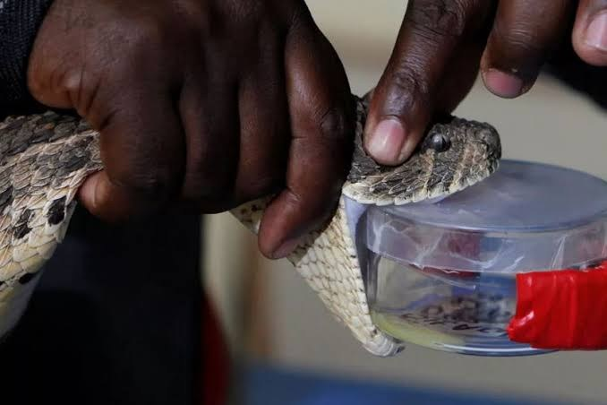

Evidence gaps
Under-reporting and limited health-system data make it difficult to estimate the true burden and plan services effectively.
About iMass Innovation
We lead and support work on venom biology and snakebite envenoming to help develop and deliver better interventions that improve outcomes for patients.
Our mission
Our work spans fundamental research into venom function, the development of snakebite therapeutics and diagnostics, clinical research into the pathophysiology of snakebite, and public-health research addressing its wider burden.
Snakebite disproportionately affects rural communities and people with limited access to timely healthcare. We focus on evidence and practical interventions that can help close these gaps.

The challenge
Addressing snakebite requires more than one intervention. The work must respond to gaps in evidence, treatment access, healthcare capacity and community knowledge.
Under-reporting and limited health-system data make it difficult to estimate the true burden and plan services effectively.
Safe, effective and quality-assured antivenom must be accessible alongside trained healthcare workers and appropriate referral pathways.
Prevention, responsible health-seeking behaviour and effective first aid can reduce avoidable harm.
Our commitment
We connect scientific discovery, clinical research, community engagement and policy advocacy so that evidence can inform action.